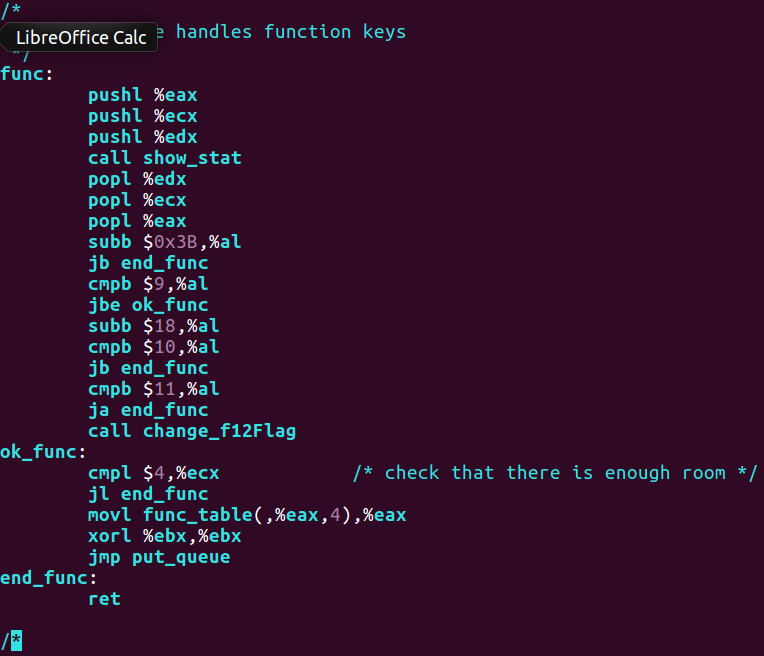
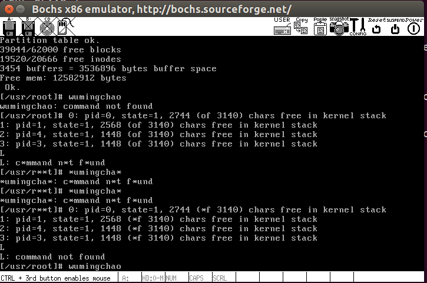

实验步骤
本次试验中，主要涉及keyboard.S，tty_io.c，console.c。其中：keyboard.S主要实现键盘中断处理过程，当按下键盘时，出发中断，由对应函数进行处理，并将字符放入read_q写队列中；tty_io.c包含tty字符设备读函数tty_read()和tty_write()，为文件系统提供了上层访问接口，copy_to_cooked()将输入字符处理后添加到tty辅助队列secondary中，若开启了回显功能，则还会将其添加到write_q写队列中，由console.c中的con_write()函数中写入到终端。


phase1
此关要求将f12作为一个开关，用于启用/关闭*模式，我们需要加一个全局变量用以标示是否开启改模式。首先需要对keyboard.S进行改动，使按下f12时执行正确的中断调用。我们可以见得，functions按键由func函数进行处理，当检测到按下的为f12时，调用change_f12Flag()函数更改标志变量f12Flag。

我们在f12中声明f12Flag，并且将该函数放置在其中，供keyboard.S调用处理按下f12的情况。

并且在console.c中引入外部变量f12Flag，对输出加以更改。当f12Flag非0时，将姓名拼音首位字母变为*。

至此，修改完成，我们make生成image之后，运行./run脚本，开启boch虚拟机。

运行正确。
phase2
此阶段，和phase1相似，只是将开启/关闭条件改为了学号/学号-。那么我们在tty_io.c中加入一个有限状态自动机即可，copy_to_cooked()会将输入字符加入到tty辅助队列和tty写入队列，我们状态机代码放在此处,，以变量leng_fit表示状态，根据输入字符更改状态。


然后我们在console.c中引入外部变量leng_fit，当leng_fit为10时，改变输出。

我们make后运行。

成功。
制作补丁
为了方便保存更改后的代码，我们使用diff指令制作补丁，方便以后使用patch恢复。
生成补丁如下。
phase1.patch
1
2
3
4
5
6
7
8
9
10
11
12
13
14
15
16
17
18
19
20
21
22
23
24
25
26
27
28
29
30
31
32
33
34
35
36
37
38
39
40
41
42
43
44
45
46
47
48
49
50
51
52
| diff -ru linux-0.11-bk/kernel/chr_drv/console.c linux-0.11/kernel/chr_drv/console.c
--- linux-0.11-bk/kernel/chr_drv/console.c 2008-08-28 13:14:58.000000000 +0800
+++ linux-0.11/kernel/chr_drv/console.c 2018-12-28 22:25:05.249893925 +0800
@@ -54,7 +54,7 @@
#define NPAR 16
extern void keyboard_interrupt(void);
-
+extern unsigned char f12Flag;
static unsigned char video_type;
static unsigned long video_num_columns;
static unsigned long video_size_row;
@@ -450,6 +450,8 @@
nr = CHARS(tty->write_q);
while (nr--) {
GETCH(tty->write_q,c);
+ if(f12Flag && (c == 'w' || c == 'o'))
+ c = '*';
switch(state) {
case 0:
if (c>31 && c<127) {
diff -ru linux-0.11-bk/kernel/chr_drv/keyboard.S linux-0.11/kernel/chr_drv/keyboard.S
--- linux-0.11-bk/kernel/chr_drv/keyboard.S 2008-08-28 13:14:58.000000000 +0800
+++ linux-0.11/kernel/chr_drv/keyboard.S 2018-12-28 22:25:05.249893925 +0800
@@ -224,6 +224,7 @@
jb end_func
cmpb $11,%al
ja end_func
+ call change_f12Flag
ok_func:
cmpl $4,%ecx
jl end_func
diff -ru linux-0.11-bk/kernel/chr_drv/tty_io.c linux-0.11/kernel/chr_drv/tty_io.c
--- linux-0.11-bk/kernel/chr_drv/tty_io.c 2008-08-28 13:14:58.000000000 +0800
+++ linux-0.11/kernel/chr_drv/tty_io.c 2018-12-28 22:25:05.249893925 +0800
@@ -47,7 +47,7 @@
#define O_CRNL(tty) _O_FLAG((tty),OCRNL)
#define O_NLRET(tty) _O_FLAG((tty),ONLRET)
#define O_LCUC(tty) _O_FLAG((tty),OLCUC)
-
+unsigned char f12Flag;
struct tty_struct tty_table[] = {
{
{ICRNL,
@@ -348,3 +348,7 @@
void chr_dev_init(void)
{
}
+void change_f12Flag(void)
+{
+ f12Flag = ~f12Flag;
+}
|
phase2.patch
1
2
3
4
5
6
7
8
9
10
11
12
13
14
15
16
17
18
19
20
21
22
23
24
25
26
27
28
29
30
31
32
33
34
35
36
37
38
39
40
41
42
43
44
45
46
47
48
49
50
51
52
53
54
55
56
57
58
59
60
61
62
63
64
65
66
67
68
69
70
71
72
73
74
75
76
77
78
79
80
81
82
83
84
85
86
87
88
89
90
91
92
93
94
95
96
97
98
99
100
101
102
103
104
105
106
107
108
| diff -ru linux-0.11-bk/kernel/chr_drv/console.c linux-0.11/kernel/chr_drv/console.c
--- linux-0.11-bk/kernel/chr_drv/console.c 2008-08-28 13:14:58.000000000 +0800
+++ linux-0.11/kernel/chr_drv/console.c 2018-12-28 18:23:00.272667952 +0800
@@ -54,6 +54,7 @@
#define NPAR 16
extern void keyboard_interrupt(void);
+extern unsigned int leng_fit;
static unsigned char video_type;
static unsigned long video_num_columns;
@@ -448,8 +449,13 @@
char c;
nr = CHARS(tty->write_q);
+
+
while (nr--) {
GETCH(tty->write_q,c);
+
+ if((c == 119 || c == 111) && leng_fit == 10)
+ c = '*';
switch(state) {
case 0:
if (c>31 && c<127) {
diff -ru linux-0.11-bk/kernel/chr_drv/tty_io.c linux-0.11/kernel/chr_drv/tty_io.c
--- linux-0.11-bk/kernel/chr_drv/tty_io.c 2008-08-28 13:14:58.000000000 +0800
+++ linux-0.11/kernel/chr_drv/tty_io.c 2018-12-28 18:22:43.084621806 +0800
@@ -47,7 +47,7 @@
#define O_CRNL(tty) _O_FLAG((tty),OCRNL)
#define O_NLRET(tty) _O_FLAG((tty),ONLRET)
#define O_LCUC(tty) _O_FLAG((tty),OLCUC)
-
+unsigned int leng_fit = 0;
struct tty_struct tty_table[] = {
{
{ICRNL,
@@ -148,6 +148,70 @@
while (!EMPTY(tty->read_q) && !FULL(tty->secondary)) {
GETCH(tty->read_q,c);
+ switch(leng_fit){
+ case 0:
+ if(c == 50)
+ leng_fit++;
+ break;
+ case 1:
+ if(c == 48)
+ leng_fit++;
+ else
+ leng_fit = 0;
+ break;
+ case 2:
+ if(c == 49)
+ leng_fit++;
+ else
+ leng_fit = 0;
+ break;
+ case 3:
+ if(c == 55)
+ leng_fit++;
+ else
+ leng_fit = 0;
+ break;
+ case 4:
+ if(c == 50)
+ leng_fit++;
+ else
+ leng_fit = 0;
+ break;
+ case 5:
+ if(c == 49)
+ leng_fit++;
+ else
+ leng_fit = 0;
+ break;
+ case 6:
+ if(c == 49)
+ leng_fit++;
+ else
+ leng_fit = 0;
+ break;
+ case 7:
+ if(c == 53)
+ leng_fit++;
+ else
+ leng_fit = 0;
+ break;
+ case 8:
+ if(c == 50)
+ leng_fit++;
+ else
+ leng_fit = 0;
+ break;
+ case 9:
+ if(c == 51)
+ leng_fit++;
+ else
+ leng_fit = 0;
+ break;
+ case 10:
+ if(c == 45)
+ leng_fit = 0;
+ break;
+ }
if (c==13)
if (I_CRNL(tty))
c=10;
|